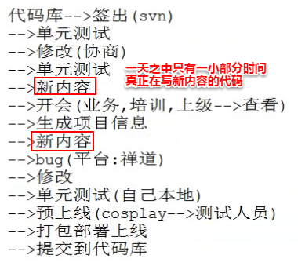
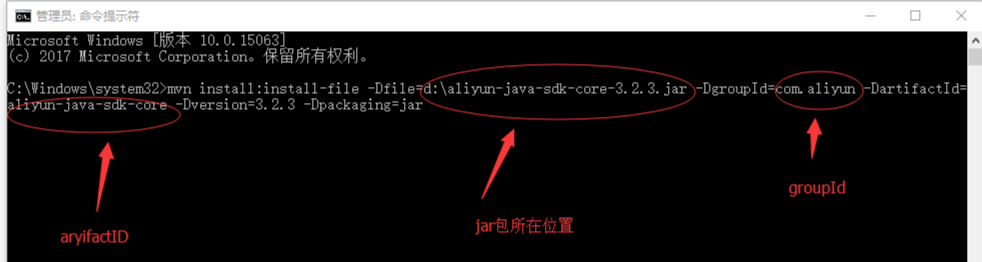

1.什么是maven
Maven的中文意思是专家,内行。
maven是一个项目构建,依赖管理,项目信息管理的工具。不涉及编码,主要是改变编码方式。
主要针对于javase, javaee,即可用于瀑布式开发,也可用于敏捷开发。
现在只有内部使用的工具才会更多的使用瀑布开发, 全部开发完成,整体上线。 现在大部分的商业开发都是敏捷开发, 先做好一个主体框架,让软件项目能运行,其他一些小功能之后再慢慢添加
2.项目构建
程序员每天干的活: (真正写代码的时间很少)

把下面这些, 与编码无关但又不得不做的事情就叫做项目构建:
清理(即 将之前生成的内容清除掉)-->编译-->单元测试-->打包-->部署
市面上的项目构建工具:
Ant : apache项目,项目构建工具。(不能管理依赖(jar包)、信息(各种生成信息),也即是不能打包、部署等)
eclipse : 一个ide,可以做项目构建,依赖管理,信息管理。但是手工操作比较多,浪费时间。
maven : apache项目,也是一个项目构建和依赖管理工具。采用的是pom(项目对象模型),通过xml的简单配置,就可以实现管理。支持一键式操作(即通过几条简单命令即可做到所有的事)
gradle : 与maven最大的差别是maven是通过xml进行配置的,而gradle是通过groovy语言进行配置, groovy语言比xml简单很多,有点类似于json。
3.依赖管理(即jar包的管理)
jar包的管理方式
1)项目管理的方式:
(1)以前管理jar包是直接把jar复制到项目中,放在项目里。缺点是会导致项目太大, 项目里jar包就占了很大的空间
(2)或者通过引用的方式,链接到本地依赖库路径。这种方式的缺陷就是不利于代码移植,上传到项目库后,别人下到自己电脑是用不了的, 需要重新引用。
以上两种方式在eclipse的项目中可以体现为如下图的形式:

(3)maven-->仓库(repository)。仓库包含有中央仓库、本地仓库和私服。
中央仓库: 是一个远程服务器(该服务器上放了很多资源,比如jar包)
本地仓库: 即存储本地资源(比如jar包)的地方(不是放在项目里,否则项目还是很大)
私服: 远程服务器可能在国内, 使用起来不方便, 私服就是自己(或小公司)搭建一个服务器来储存中央仓库中的这些资源, 然后本地仓库需要资源(比如jar包)的话可以直接从私服下载而不需要从中央仓库下载。(类似于外国软件在国内的镜像站)
maven可以解决上面(1)(2)的项目管理方式所存在的问题, 一键式管理, 非常方便省事,不让jar包的导入浪费我们的时间和项目空间。
maven进行仓库管理的结构图如下:

2)依赖冲突(jar包版本不对应等一系列问题): maven可以解决版本不一致导致项目无法运行的情况 -->通过 gav(唯一坐标), 每个依赖的jar包名在pom.xml里都有配置唯一gav与之对应,也就意味着只有一个版本的jar, 也就不会存在版本不一致的问题。
3)约定优于配置(代码写的规范很重要,增强可读性): maven对项目有要求。对目录结构、类名等都有规范。
-----------------------------------------------------------------------------------------------------------------------------
4.maven的下载和安装
4.1 下载。下面两个地址择一即可:
4.2 安装
1.解压apache-maven-3.6.0-bin.zip到非中文路径

研究一下解压出来后的目录结构:
bin: 二进制可执行文件(主要用到的是里面的mvn)
boot: maven启动时需要加载的jar
conf: 配置文件目录(里面有个settings.xml是maven的配置文件)
lib: 一些依赖jar
因为中央仓库很可能传输速度慢,或者太远, 远在国外, 所以提前准备了一个本地仓库文件压缩包repo.zip,里面有很多已经提前下好的jar包, 这样在项目需要jar包时,如果本地仓库有,就不需要临时去中央仓库下载了,直接引用本地的即可。将repo.zip解压缩后, 和maven安装包放在同一个目录下, 如下:

2.配置一下位于安装包的conf目录下的配置文件settings.xml
maven中有两种配置, 一种是全局配置(给所有用户配置的属性,所有的用户共用该属性,读取的就是安装包里的conf/settings.xml文件), 一种是用户配置(只给当前用户配置的属性,需要在当前用户自己独立拥有的settings.xml文件里配置, 读取的是用户家目录里的settings.xml文件,即${user.name}/.m2/settings.xml文件),如果需要单独给某用户配置属性, 则把全局配置的settings.xml文件复制到${user.name}/.m2/目录下,再进行一些修改即可。这里我们暂时只配置全局配置。
(1)打开settings.xml, 找到如下图的关键字配置本地仓库的路径

这里可以修改一下我们Windows平台的本地仓库的路径。因为前面已经有了repo.zip压缩包解压出来的本地仓库, 所以就把本地仓库设在该路径下, 可以少花时间下载很多资源。也就是在配置文件中添加一行如下:

(2)同样是在settings.xml里, 找到如下图:
这里是配置远程仓库的路径, 因为中央仓库的下载速度可能比较慢, 所以可以修改一下,配置成私服的路径。
配置成阿里云私服如下:

也即是在<mirrors> </mirrors>关键字之间添加如下内容:
<mirror>
<id>nexus-aliyun</id>
<mirrorOf>*</mirrorOf>
<name>Nexus aliyun</name>
</mirror>
(3)（这步其实可以不做）再在settings.xml里, 找到如下图。配置jdk的版本为和自己安装的jdk适配的版本。配置为如下:

也即是在<profiles> </profiles> 关键字之间添加如下内容:
<profile>
<id>jdk-1.8</id>
<activation>
<activeByDefault>true</activeByDefault>
<jdk>1.8</jdk>
</activation>
<properties>
</properties>
</profile>
3.配置环境变量
如果是在Windows系统里,则是新建MAVEN_HOME系统环境变量为maven目录, 如下:

然后,再在Path系统环境变量里添加一行 %MAVEN_HOME%\bin 。如下

如果是在Linux环境里,则只需:
如果是hadoop用户下安装, 则:
vim /home/hadoop/.bashrc
末尾添加如下两行:
export MAVEM_HOME=/home/hadoop/apps/apache-maven-3.6.0
export PATH=$PATH:$MAVEM_HOME/bin
再重新加载配置文件: source /home/hadoop/.bashrc
如果是root用户下安装, 则: (我在自己虚拟机的hadoop05的root用户下已经安装了maven)
vim /etc/profile
末尾添加如下两行:
export MAVEM_HOME=/usr/local/maven/apache-maven-3.6.0
export PATH=$PATH:$MAVEM_HOME/bin
再重新加载配置文件: source /etc/profile
4.测试
mvn -v
打印信息如下:

-------------------------------------------------------------------------------------------------------------------------------------------------------------
5.maven项目创建
1.maven项目目录结构

project
-|src
|-main: 存放主业务逻辑
|-java: java源代码
|-resources: 主业务逻辑里的配置文件(如一些xml和properties文件)
|-test: 存放单元测试的代码
|-java: 测试用的java源代码(注意:测试的代码要和主业务逻辑的源代码在同一个package下)
|-resources: 测试时需要的配置文件
|target: 输出目录(用来如编译、打包, 这个文件夹不用自己创建, 这个目录会在运行时自动生成)
|pom.xml: maven项目的配置文件(用于配置构建和依赖管理)
下面是纯手动生成(不用eclipse)maven项目时的方式:
所有的jar包其实就是个压缩包, Maven安装包里的类库lib里的jar包也是用maven编写的, 所以直接解压出来也会有pom.xml文件。可以解压一个看看pom.xml文件里面一般都有写的内容。

如果在maven项目中需要用到别的项目的jar包,则只需要在pom.xml中用gav(坐标)的形式表示出来要导的包在何处, 而以前要用jar包,不用maven的话, 则需要将jar包引用或者复制到项目中。maven则只需要在配置文件中指出,既不会使项目所占储存空间过大, 也不会有引用失效的问题。
如下面的例子中, 需要用到org.junit.Test包:

则只需要在pom.xml 中的<project> </project>关键字中加入如下内容:

2.maven命令
(下面这些命令都要在具体的项目的一级目录下用cmd执行,否则不知道管理的是哪个项目。)
如在c: \maven\目录下有个项目叫HelloWorld:

则用命令行执行maven命令时要cd到该目录下。如执行mvn test命令时命令行要在如下目录:

mvn compile:编译(编译主业务逻辑,也就是编译maven项目目录结构中的main文件夹下的东西。会在该maven项目的一级目录中生成一个target文件夹)

mvn test: 用于单元测试(如果测试前没有编译, 还会自动先编译再测试)
mvn clean: 清理(将编译和测试内容删除, 也就是会把target文件夹里的所有内容清理掉(target里之前打好的包也会清理掉)。可以在重新测试该项目前执行该操作)
mvn package:打包(默认打成jar。如果是web项目,通常我们会选择打成war。打包成功的包会放在target目录下。打包的时候如果没有编译和测试会先进行一遍编译和测试,确保程序没错时才会进行打包, 有错的话则打包失败。打包的过程实际上是先清理(这里的清理不会清理掉target里之前打的包),再编译,然后测试。)
打包的包名可以另外设置: 只要在pom.xml文件中的<project></project>之间加入如下内容即可:

则包名由原来的 hello-0.0.1-SNAPSHOT.jar 变为了 hello.jar 。(但要注意, 发布时的包名还是会按照gav坐标里的定义来发布包名, 不会因为配置构建的包名设置而改变, 也就是说发布时的包名是hello-0.0.1-SNAPSHOT.jar而不是hello.jar。还是这也是gav存在的意义, 保证了坐标的唯一性, 不会随便篡改,别人想引用你的包也只需要把你定义的gav坐标复制到他的pom.xml 文件里即可, 而不用在意你配置构建里配置成了什么包名)
mvn install: 发布(打包并且发布到仓库里面去,但要注意只是发布到本地仓库(发布到之前我们在配置文件配置的本地仓库路径)。发布之前会清理(不会清理掉target里之前打的包)、编译、测试、打包)
mvn install 还可以直接在Windows命令行或者Linux本地直接执行。准备好要发布到本地仓库的jar包。然后通过如下命令: (其中-DgroupId、-DartifactId、-Dversion是该jar包的gav坐标)
mvn install:install-file -Dfile=jar包所在的路径 -DgroupId=groupId -DartifactId=artifactId -Dversion=上面的version -Dpackaging=jar
示例如下:

组合命令:
mvn clean package : 先清理掉target目录下的所有内容,再打包
mvn clean install : 先清理掉target目录下的所有内容,再发布
----------------------------------------------------------------------------------------------------------------------------------
6.eclipse中创建maven项目
6.1 将maven集成到eclipse中(也属于安装maven的一部分)
在eclipse的菜单栏的: Window -> Preferences -> 搜索"Maven" ->
做两件事:
(1)选择"Installation" -> 点击"add" -> 选择自己的maven安装目录并确定 -> 选中该选项 -> Apply
(只到安装目录,不到安装目录的\bin文件夹,如下图)

(2)选择"User Settings" :
因为我们的安装目录并不是默认的c盘下的,所以要把Global Settings(全局配置)和User Settings(用户配置)的路径都改一下, 改成我们的安装目录下conf\settings.xml文件(当然这里并没有区分用户配置和全局配置的配置文件, 如果需要,可以让用户配置和全局配置为两个不同目录下的文件,也就是这里设置时保持User Settings为系统预设的默认目录不变。这里只是学习使用,所以不区分全局和用户配置)。改完之后,下面的Local Repository(本地仓库)也会改变为我们安装maven时配置的本地仓库目录。如下:

6.2 创建maven项目
1)骨架式: 也就是调用了模板,模板里面已经把maven基本的框架(骨架)已经搭建起来了, 基本的配置信息也已经写好了,只需写自己的核心业务模块即可
2)简单项目式: 也就是只创建一个基本目录, 所有东西都需要全部手工写上去, 手工进行配置
首先: 新建"Maven Project"项目:

接下来红框如果不勾的话就是"骨架式",接下来就会给你一些项目模板让你选择一个(其实就是加载相应模板的配置信息,下载一些插件); 勾的话就是"简单项目式",接下来就会跳过模板的选择, 直接创建为一个简单项目。我们先不勾下图红框的选项,先创建为骨架式, 点击Next。

接下来有很多的骨架,使用最多的就是下面红框中的两个,quickstart意思是创建一个java项目, webapp意思是创建为一个web项目。先创建为一个java项目, 点击next。

接下来就是设置gav(坐标)信息了,指定到时候发布时的jar包的唯一标识。再点击finish即可。

成功之后的目录结构如下:

如果有需要, 还可以添加两个源代码目录(Source Folder): src/main/resources和src/test/resources, 这样就是完整的maven项目目录结构的样子了。添加方法如下:

添加完后的目录结构是:

src/main/java和src/test/java的包里有两个自动生成的类, 如果不需要可以删除。
项目里的pom.xml点开后默认的样子如下:

也可以点下面的的框"pom.xml"切换成源码模式:


主业务类的代码如下:

测试类的代码如下:

注意让整个项目运行的方法如下:(如果在项目中的某个类的代码编辑页面运行的话,则只是让该类运行了而已)

则会出现如下界面:

接下来在Console窗口就是打印运行的信息,并且会在target文件夹里生成相应的文件

如果是创建web项目,反而很多时候不会选择骨架式创建项目,反而会选择简单项目式来创建项目, 因为骨架式一旦修改起来的话会比较麻烦。创建步骤如下:

下面是创建简单项目时的界面:

创建完的项目如下,可以发现比原来的src中多了一个webapp目录(原来的src目录与Java Resources目录里的东西完全一致), 这也是项目创建出来就报错的原因, 缺少了web所需要的东西。

如果要找某个依赖jar包的gav坐标写到pom.xml来配置<dependency></dependency>,可以去下面这个网站找:
在选择版本号的时候如果不知道该选哪个版本的话, 一般选择使用量比较大的并且日期相对比较新的(版本号比较新的)
6.3 依赖管理<dependency></dependency>里面的<scope></scope>:
关键字scope的意思是作用域。<scope></scope>里面可以写的值有下面几个:
compile: 默认情况下就是这个。即不定义<scope></scope>属性的话就是等价于显式的写<scope>compile</scope>。意味着在任何情况下(编译、打包、部署、测试等)该依赖jar包都是起作用的。
test: 只在测试时有效(比如junit包就只需在测试时有效即可)
provided: 在编译时起效,运行(或部署)时不生效。(比如servlet-api, 在部署到服务器后服务器有自己的servlet-api,不会用项目提供的)
runtime: 在运行(部署)时起效,编译时不起效。(java里的反射机制就是运行时生效,编译时不生效。比如com.mysql.jdbc.Driver,数据库连接工具在编译时肯定是不生效的)
6.4 tomcat插件使用
<!-- 在项目的pom.xml中添加插件 tomcat-->
<plugins>
<plugin>
<groupId>org.apache.tomcat.maven</groupId>
<artifactId>tomcat7-maven-plugin</artifactId>
<configuration>
<port>8080</port>
<path>/</path>
</configuration>
</plugin>
</plugins>
则运行整个maven项目时的Goals变为下面这个:
tomcat7:run
-------------------------------
<dependencies>是依赖, 父pom.xml里定义的依赖, 子模块继承后自动包含这些依赖, 该子模块的pom.xml里不用再写该依赖。
<dependencyManagement>依赖管理, 依赖管理可以理解为声明, 但项目里没有真的引入这个jar包(下载下来导入项目等)。dependencyManagement一般放在父pom.xml文件里, 最重要的作用是管理依赖的版本号, 让子模块都是使用同一个版本的依赖jar包, 一旦定义了dependencyManagement, 那就可在子模块里依赖该jar时, 不写该依赖的版本号。